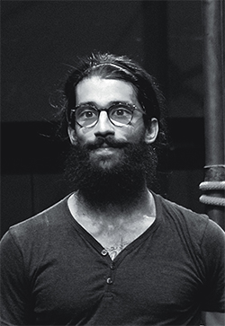
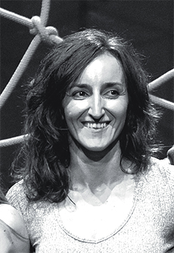

AlodeyáAlodeyá Circo Danza surge de la inquietud de sus componentes de buscar nuevos caminos de expresión a través de la sinergia entre distintas formas artísticas. Mediante la poesía, la música, la danza y el circo desarrollan un lenguaje íntimo y de gran elocuencia para contar historias de encuentros y desencuentros, de amor y desamor, de juego. Historias de gran potencia visual y de contenidos. |
EduUna década después de coger su primera pelota, Edu ha desarrollado un estilo personal de entender los malabares y mezclarlos con la danza y el movimiento. En su formacion ha trabajado con artistas de diferentes disciplinas desde la danza y la acrobacia hasta los malabares con profesionales como Stefan Sing o Gandini Juggling. |
PauProfesora de danza, bailarina y coreógrafa inmersa en proyectos de educación emocional y crecimiento personal. Su dilatada trayectoria como bailarina le ha llevado a trabajar en el Circo del Sol, en Parque España en Japón y por festivales por Europa. Es también miembro directivo de Enacción Danza que apoya el desarrollo de formas de danza contemporáneas con procesos de participación social. |
SofíaDedica su tiempo a la educación trabajando como maestra, a la musicoterapia, a la música y a la escritura. Ha actuado en distintas formaciones como baterista y pianista, así como publicado poemas en diversos libros, siendo la palabra una parte fundamental en su manera de mirar y entender por estar implícita en la literatura la transformación constante y por entenderla como una vía para dar forma a las preguntas. |
LauraBailarina profesional que no ha parado de bailar desde los 9 años y que se rige por su formación clásica y contemporánea pero aportando una gran parte de sentimiento y fuerza personal. Ha bailado para la Cia de Ballet de Zaragoza, Sol Producciones (Madrid), Spain Mura Circo Mie Ken (Japón); bailarina en el proyecto Crossing of Movements Project (Korea) y actualmente forma parte de Tarde o Temprano Danza. |
|  |
Milki |
|  |
Noche |